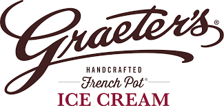

Job History

Cincinnati Museum Center
Guide
Worked within the Natural Science and Histroy Museum and the Children's Museum.
Gave patrons tours and educational courses.
Exhibited professional behavior and positive attitude at all times.

Graeter's Ice Cream and Bakery
Team Leader
Excuded exemplary customer service to all customers.
Decorated cakes and prepared desserts.
Maintained appearance and cleanliness of business establishment.
Managed small group of team members.
ATOS
Level II Customer Service
IT customer service desk for Firestone Tires corporate division - Multinational.
Downloaded/Uploaded harware and software for employee devices.
Report and troubleshoot (remotely) outages, connectivity issues, and other technical issues. Reporting major issues to local IT branches for further resolution.
Assign devices to employees, as well as device setup.
Cleaned and serviced hardrives for employee devices.